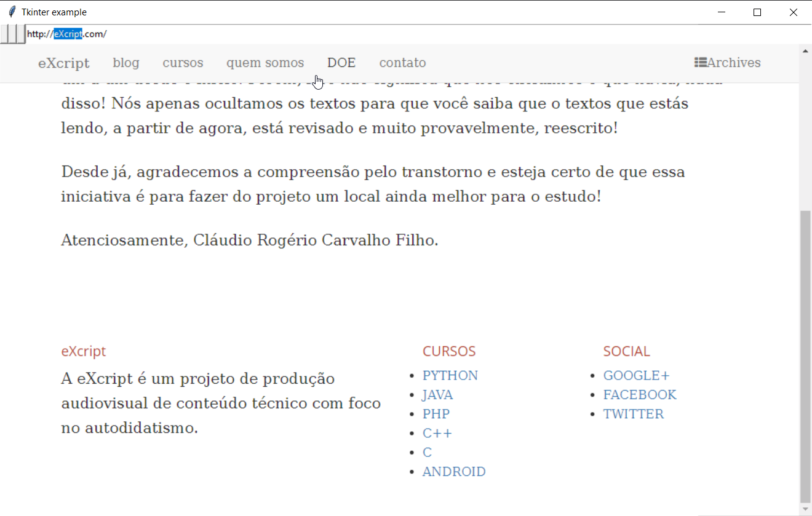

INTRODUÇÃO
Várias são as formas de manipularmos um navegador Web através do Python. Talvez a maneira mais desconhecida seja a manipulação através da criação de um janela e a posterior adição do espaço que é renderizado na exibição de cada página.
É totalmente possível importarmos o navegador utilizando o framework Kivy mas essa não é hoje a melhor maneira de fazer isso se a nossa aplicação é voltada a uso em desktop.
Portanto, caso o objetivo seja somente a exibição em Desktop, a maneira mais simples e fácil é através do uso da biblitoca Tkinter.
CEFPython
A incorporação do navegador Google Chrome em uma janela do Tkinter é possível através da implementação que vem sendo feita por Czarek Tomczak.
Inicialmemnte, temos que instalar um biblioteca através do pip. Pra isso, ative o ambiente virtual pois iremos instalar uma biblioteca dentro do mesmo utilizando a ferramenta pip.
pip install cefpython3
A página contendo maiores detalhes sobre biblioteca CEFPython3 pode ser aessada caso você necessite de mais esclarecimentos.
CÓDIGO
Vamos então, escrever um código que seja capaz de exibir a página da eXcript dentro de um formulário do Tkinter!
A seguir, temos o código contido junto a biblioteca para servir de exemplo, observe que o mesmo é bastante extenso, porém, super simples de ser entendido pra posterior adaptação a nossas necessidades. Obviamente, parto do princípio que você tenha conhecimentos sobre Tkinter mas, caso não tenhas, acesse um pequeno curso que gravei e disponibilizei no YouTube.
PS: a documentação da biblioteca Tkinter ainda é bastante escasso mas muitos sites novos e blogs estão escrevendo sobre a mesma nos últimos anos. O curso cujo link adicionei acima lhe proporcina uma base inicial para o entendimento do funcionamento geral desse framework built-in.
Ao executar o código abaixo você entrará na página da eXcript, conforme pode ser visto na imagem abaixo:
# O código abaixo foi adaptado do exemplo original disponibilizado no Github pelos
# desenvolvedores. Os comentários contidos no código fora traduzidos e muitos outro
# adicionados.
#
# Exemplo de incorporação do navegador CEF Python usando o kit de ferramentas Tkinter.
# Este exemplo tem dois widgets: uma barra de navegação e um navegador.
#
# OBSERVAÇÃO: Este exemplo geralmente falha no Mac (Python 2.7, Tk 8.5 / 8.6) durante o
# carregamento inicial do aplicativo com essa mensagem: "Segmentation fault: 11".
with such message:
#
# Configurações testadas:
# - Tk 8.5 on Windows/Mac
# - Tk 8.6 on Linux
# - CEF Python v55.3+
#
# Problema conhecido no Linux: Ao digitar a url, o mouse deve estar sobre o
# widget de entrada de URL, caso contrário, o foco do teclado é perdido
from cefpython3 import cefpython as cef
import ctypes
try:
import tkinter as tk
except ImportError:
import Tkinter as tk
import sys
import os
import platform
import logging as _logging
# a variável WindowUtils não está sendo utilizada neste código e provavelmente
# o desenvolvedor a declarou devido a sua importância.
WindowUtils = cef.WindowUtils()
# Platformas
WINDOWS = (platform.system() == "Windows")
LINUX = (platform.system() == "Linux")
MAC = (platform.system() == "Darwin")
# Globals
logger = _logging.getLogger("tkinter_.py")
# Constantes
# Tk 8.5 não suporta imagens png
IMAGE_EXT = ".png" if tk.TkVersion > 8.5 else ".gif"
def main():
logger.setLevel(_logging.INFO)
stream_handler = _logging.StreamHandler()
formatter = _logging.Formatter("[%(filename)s] %(message)s")
stream_handler.setFormatter(formatter)
logger.addHandler(stream_handler)
logger.info("CEF Python {ver}".format(ver=cef.__version__))
logger.info("Python {ver} {arch}".format(
ver=platform.python_version(), arch=platform.architecture()[0]))
logger.info("Tk {ver}".format(ver=tk.Tcl().eval('info patchlevel')))
assert cef.__version__ >= "55.3", "CEF Python v55.3+ necessário para executar este"
sys.excepthook = cef.ExceptHook # Para desligar todos os processos CEF em erro
root = tk.Tk()
app = MainFrame(root)
# O TK deve ser inicializado antes do erro fatal (que ocorre em alguma plataformas)
# (Problema nº 306)
cef.Initialize()
app.mainloop()
cef.Shutdown()
class MainFrame(tk.Frame):
def __init__(self, root):
self.browser_frame = None
self.navigation_bar = None
# Root
root.geometry("900x640")
tk.Grid.rowconfigure(root, 0, weight=1)
tk.Grid.columnconfigure(root, 0, weight=1)
# MainFrame
tk.Frame.__init__(self, root)
self.master.title("Exemplo da Exibição do Chome no Tkinter")
self.master.protocol("WM_DELETE_WINDOW", self.on_close)
self.master.bind("<Configure>", self.on_root_configure)
self.setup_icon()
self.bind("<Configure>", self.on_configure)
self.bind("<FocusIn>", self.on_focus_in)
self.bind("<FocusOut>", self.on_focus_out)
# NavigationBar
self.navigation_bar = NavigationBar(self)
self.navigation_bar.grid(row=0, column=0,
sticky=(tk.N + tk.S + tk.E + tk.W))
tk.Grid.rowconfigure(self, 0, weight=0)
tk.Grid.columnconfigure(self, 0, weight=0)
# BrowserFrame
self.browser_frame = BrowserFrame(self, self.navigation_bar)
self.browser_frame.grid(row=1, column=0,
sticky=(tk.N + tk.S + tk.E + tk.W))
tk.Grid.rowconfigure(self, 1, weight=1)
tk.Grid.columnconfigure(self, 0, weight=1)
# Pack MainFrame
self.pack(fill=tk.BOTH, expand=tk.YES)
def on_root_configure(self, _):
logger.debug("MainFrame.on_root_configure")
if self.browser_frame:
self.browser_frame.on_root_configure()
def on_configure(self, event):
logger.debug("MainFrame.on_configure")
if self.browser_frame:
width = event.width
height = event.height
if self.navigation_bar:
height = height - self.navigation_bar.winfo_height()
self.browser_frame.on_mainframe_configure(width, height)
def on_focus_in(self, _):
logger.debug("MainFrame.on_focus_in")
def on_focus_out(self, _):
logger.debug("MainFrame.on_focus_out")
def on_close(self):
if self.browser_frame:
self.browser_frame.on_root_close()
self.master.destroy()
def get_browser(self):
if self.browser_frame:
return self.browser_frame.browser
return None
def get_browser_frame(self):
if self.browser_frame:
return self.browser_frame
return None
def setup_icon(self):
resources = os.path.join(os.path.dirname(__file__), "resources")
icon_path = os.path.join(resources, "tkinter"+IMAGE_EXT)
if os.path.exists(icon_path):
self.icon = tk.PhotoImage(file=icon_path)
# noinspection PyProtectedMember
self.master.call("wm", "iconphoto", self.master._w, self.icon)
class BrowserFrame(tk.Frame):
def __init__(self, master, navigation_bar=None):
self.navigation_bar = navigation_bar
self.closing = False
self.browser = None
tk.Frame.__init__(self, master)
self.bind("<FocusIn>", self.on_focus_in)
self.bind("<FocusOut>", self.on_focus_out)
self.bind("<Configure>", self.on_configure)
self.focus_set()
def embed_browser(self):
window_info = cef.WindowInfo()
rect = [0, 0, self.winfo_width(), self.winfo_height()]
window_info.SetAsChild(self.get_window_handle(), rect)
self.browser = cef.CreateBrowserSync(window_info,
url="https://www.eXcript.com/")
assert self.browser
self.browser.SetClientHandler(LoadHandler(self))
self.browser.SetClientHandler(FocusHandler(self))
self.message_loop_work()
def get_window_handle(self):
if self.winfo_id() > 0:
return self.winfo_id()
elif MAC:
# No ID da janela do Mac, existe um valor negativo inválido (Issue #308).
# Este é um tipo de hack "sujo" para obter o identificador de janela usando
# o pacote PyObjC. Se você alterar a estrutura das janelas, também precisará
# fazer modificações aqui.
# noinspection PyUnresolvedReferences
from AppKit import NSApp
# noinspection PyUnresolvedReferences
import objc
# Às vezes, há mais de uma janela, quando o aplicativo não fecha corretamente
# na última vez que o Python exibe uma janela do NSAlert perguntando se deseja
# reabrir essa janela.
# noinspection PyUnresolvedReferences
return objc.pyobjc_id(NSApp.windows()[-1].contentView())
else:
raise Exception("Não foi possível obter o identificador da janela")
def message_loop_work(self):
cef.MessageLoopWork()
self.after(10, self.message_loop_work)
def on_configure(self, _):
if not self.browser:
self.embed_browser()
def on_root_configure(self):
# O evento root <Configure> será invocado quando a janela superior for movida
if self.browser:
self.browser.NotifyMoveOrResizeStarted()
def on_mainframe_configure(self, width, height):
if self.browser:
if WINDOWS:
ctypes.windll.user32.SetWindowPos(
self.browser.GetWindowHandle(), 0,
0, 0, width, height, 0x0002)
elif LINUX:
self.browser.SetBounds(0, 0, width, height)
self.browser.NotifyMoveOrResizeStarted()
def on_focus_in(self, _):
logger.debug("BrowserFrame.on_focus_in")
if self.browser:
self.browser.SetFocus(True)
def on_focus_out(self, _):
logger.debug("BrowserFrame.on_focus_out")
if self.browser:
self.browser.SetFocus(False)
def on_root_close(self):
if self.browser:
self.browser.CloseBrowser(True)
self.clear_browser_references()
self.destroy()
def clear_browser_references(self):
# Limpe as referências do navegador que você mantém em qualquer lugar
# em seu código. Todas as referências devem ser apagadas para que o CEF
# seja desligado corretamente.
self.browser = None
class LoadHandler(object):
def __init__(self, browser_frame):
self.browser_frame = browser_frame
def OnLoadStart(self, browser, **_):
if self.browser_frame.master.navigation_bar:
self.browser_frame.master.navigation_bar.set_url(browser.GetUrl())
class FocusHandler(object):
def __init__(self, browser_frame):
self.browser_frame = browser_frame
def OnTakeFocus(self, next_component, **_):
logger.debug("FocusHandler.OnTakeFocus, next={next}"
.format(next=next_component))
def OnSetFocus(self, source, **_):
logger.debug("FocusHandler.OnSetFocus, source={source}"
.format(source=source))
return False
def OnGotFocus(self, **_):
"""É preciso corrigir o problemas de foco do CEF (#255). Chame focus_set do frame do
navegador para se livrar do cursor de tipo no widget de entrada de URL."""
logger.debug("FocusHandler.OnGotFocus")
self.browser_frame.focus_set()
class NavigationBar(tk.Frame):
def __init__(self, master):
self.back_state = tk.NONE
self.forward_state = tk.NONE
self.back_image = None
self.forward_image = None
self.reload_image = None
tk.Frame.__init__(self, master)
resources = os.path.join(os.path.dirname(__file__), "resources")
# Botão voltar
back_png = os.path.join(resources, "back"+IMAGE_EXT)
if os.path.exists(back_png):
self.back_image = tk.PhotoImage(file=back_png)
self.back_button = tk.Button(self, image=self.back_image,
command=self.go_back)
self.back_button.grid(row=0, column=0)
# Botão Forward
forward_png = os.path.join(resources, "forward"+IMAGE_EXT)
if os.path.exists(forward_png):
self.forward_image = tk.PhotoImage(file=forward_png)
self.forward_button = tk.Button(self, image=self.forward_image,
command=self.go_forward)
self.forward_button.grid(row=0, column=1)
# Botão Reload
reload_png = os.path.join(resources, "reload"+IMAGE_EXT)
if os.path.exists(reload_png):
self.reload_image = tk.PhotoImage(file=reload_png)
self.reload_button = tk.Button(self, image=self.reload_image,
command=self.reload)
self.reload_button.grid(row=0, column=2)
# Local onde digitamos a URL
self.url_entry = tk.Entry(self)
self.url_entry.bind("<FocusIn>", self.on_url_focus_in)
self.url_entry.bind("<FocusOut>", self.on_url_focus_out)
self.url_entry.bind("<Return>", self.on_load_url)
self.url_entry.bind("<Button-1>", self.on_button1)
self.url_entry.grid(row=0, column=3,
sticky=(tk.N + tk.S + tk.E + tk.W))
tk.Grid.rowconfigure(self, 0, weight=100)
tk.Grid.columnconfigure(self, 3, weight=100)
# Atualiza o estado dos butões
self.update_state()
def go_back(self):
if self.master.get_browser():
self.master.get_browser().GoBack()
def go_forward(self):
if self.master.get_browser():
self.master.get_browser().GoForward()
def reload(self):
if self.master.get_browser():
self.master.get_browser().Reload()
def set_url(self, url):
self.url_entry.delete(0, tk.END)
self.url_entry.insert(0, url)
def on_url_focus_in(self, _):
logger.debug("NavigationBar.on_url_focus_in")
def on_url_focus_out(self, _):
logger.debug("NavigationBar.on_url_focus_out")
def on_load_url(self, _):
if self.master.get_browser():
self.master.get_browser().StopLoad()
self.master.get_browser().LoadUrl(self.url_entry.get())
def on_button1(self, _):
"""É preciso corrigir problemas de foco do CEF (#255). Veja também
FocusHandler.OnGotFocus."""
logger.debug("NavigationBar.on_button1")
self.master.master.focus_force()
def update_state(self):
browser = self.master.get_browser()
if not browser:
if self.back_state != tk.DISABLED:
self.back_button.config(state=tk.DISABLED)
self.back_state = tk.DISABLED
if self.forward_state != tk.DISABLED:
self.forward_button.config(state=tk.DISABLED)
self.forward_state = tk.DISABLED
self.after(100, self.update_state)
return
if browser.CanGoBack():
if self.back_state != tk.NORMAL:
self.back_button.config(state=tk.NORMAL)
self.back_state = tk.NORMAL
else:
if self.back_state != tk.DISABLED:
self.back_button.config(state=tk.DISABLED)
self.back_state = tk.DISABLED
if browser.CanGoForward():
if self.forward_state != tk.NORMAL:
self.forward_button.config(state=tk.NORMAL)
self.forward_state = tk.NORMAL
else:
if self.forward_state != tk.DISABLED:
self.forward_button.config(state=tk.DISABLED)
self.forward_state = tk.DISABLED
self.after(100, self.update_state)
class Tabs(tk.Frame):
def __init__(self):
tk.Frame.__init__(self)
if __name__ == '__main__':
main()
Observe que a maior parte do código de exemplo acima está fazendo uso do framework Tkinter! Por isso, caso você tenha dificuldade em entender o funcionamento, talvez seja importante estudar um pouco mais sobre a criação de interfaces gráficas nativas com o Python.
GERAÇÃO DE PDF
Ao trabalharmos dessa forma somos capazes de criar toda a interface gráfica utilizando HTML e CSS. Isso nos permite uma infinidade de outras opções como a exportação do documento para o formato PDF.
Tags python, chrome, google, blog
Comentários
comments powered by Disqus